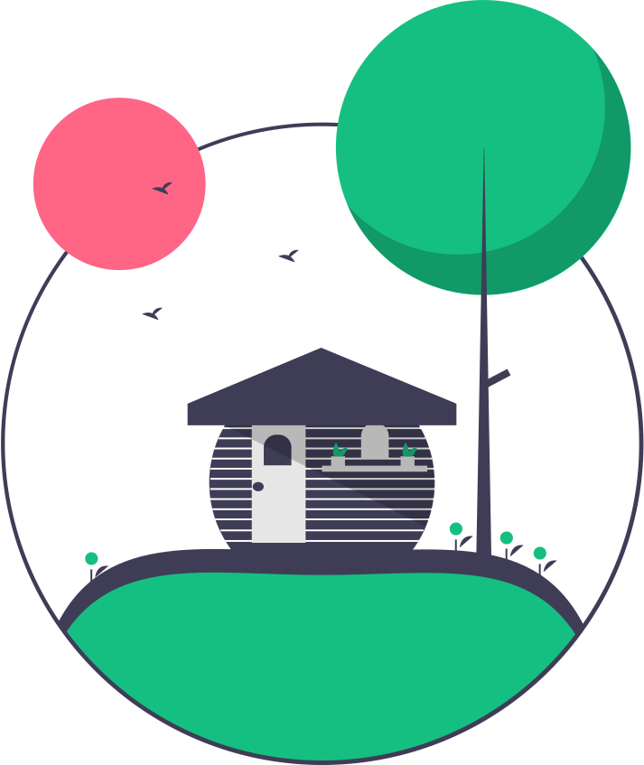

<nav class="navbar fixed-top">
    <div class="container-fluid ">
        <button *ngIf="isLoggedIn()" class="navbar-toggler" type="button" data-bs-toggle="offcanvas" data-bs-target="#offcanvasNavbar"
            aria-controls="offcanvasNavbar">
            <span class="navbar-toggler-icon"></span>
        </button>
        <h1 ><a  [routerLink]="['/']">Clínicol</a> </h1>
        <div class="offcanvas offcanvas-start" tabindex="-1" id="offcanvasNavbar" aria-labelledby="offcanvasNavbarLabel">
            <div class="offcanvas-header">
                <a class="navbar-brand offcanvas-title" id="offcanvasNavbarLabel" href="/"></a>
                
                <button type="button" class="btn-close" data-bs-dismiss="offcanvas" aria-label="Close"></button>
            </div>
            <div class="offcanvas-body">
                <ul class="navbar-nav justify-content-end flex-grow-1 pe-3">
                    <li class="nav-item">
                        <a class="nav-link" data-bs-toggle="offcanvas" data-bs-target="#offcanvasNavbar" aria-controls="offcanvasNavbar" aria-current="page" [routerLink]="['patients']" [ngClass]="{}" routerLinkActive="actived" >Mis pacientes</a>
                    </li>
                    <li class="nav-item" disabled>
                        <a class="nav-link" [routerLink]="['add-patient']" data-bs-toggle="offcanvas" data-bs-target="#offcanvasNavbar" aria-controls="offcanvasNavbar" routerLinkActive="actived">Añadir paciente</a>
                    </li><!--
                    <li class="nav-item dropdown">
                        <a class="nav-link dropdown-toggle" href="#" role="button" data-bs-toggle="dropdown"
                            aria-expanded="false" aria-disabled="true">
                            NNE
                        </a>
                        <ul class="dropdown-menu">
                            <li disabled><a class="dropdown-item" href="#" data-bs-toggle="offcanvas" data-bs-target="#offcanvasNavbar" aria-controls="offcanvasNavbar" aria-disabled="true">¿Qué es NNE?</a></li>
                            <li>
                                <hr class="dropdown-divider">
                            </li>
                            <li><a class="dropdown-item" href="#" data-bs-toggle="offcanvas" data-bs-target="#offcanvasNavbar" aria-controls="offcanvasNavbar">Diagnóstico</a></li>
                            <li>
                                <hr class="dropdown-divider">
                            </li>
                            <li><a class="dropdown-item" href="#" data-bs-toggle="offcanvas" data-bs-target="#offcanvasNavbar" aria-controls="offcanvasNavbar">Tratamiento</a></li>
                        </ul>
                    </li>-->
                </ul>
                <form ngForm #searchForm="ngForm" class="d-flex mt-3" role="search">
                    <input class="form-control me-2" type="search" placeholder="Buscar" aria-label="Search" #searchInput required>
                    <button class="btn btn-outline-success" data-bs-toggle="offcanvas" data-bs-target="#offcanvasNavbar" aria-controls="offcanvasNavbar" (click)="search(searchInput)" [disabled]="!searchForm.valid">Buscar</button>
                </form>
            </div>
        </div>

        <h3 *ngIf="!isLoggedIn()"><a class="logIcon" [routerLink]="['/login']"><svg xmlns="http://www.w3.org/2000/svg" width="30" height="30" fill="currentColor" class="bi bi-person-slash" viewBox="0 0 16 16">
            <path d="M13.879 10.414a2.501 2.501 0 0 0-3.465 3.465l3.465-3.465Zm.707.707-3.465 3.465a2.501 2.501 0 0 0 3.465-3.465Zm-4.56-1.096a3.5 3.5 0 1 1 4.949 4.95 3.5 3.5 0 0 1-4.95-4.95ZM11 5a3 3 0 1 1-6 0 3 3 0 0 1 6 0ZM8 7a2 2 0 1 0 0-4 2 2 0 0 0 0 4Zm.256 7a4.474 4.474 0 0 1-.229-1.004H3c.001-.246.154-.986.832-1.664C4.484 10.68 5.711 10 8 10c.26 0 .507.009.74.025.226-.341.496-.65.804-.918C9.077 9.038 8.564 9 8 9c-5 0-6 3-6 4s1 1 1 1h5.256Z"/>
          </svg></a></h3>
        <h3 *ngIf="isLoggedIn()"><a (click)="logout()"><svg xmlns="http://www.w3.org/2000/svg" width="30" height="30" fill="currentColor" class="bi bi-person-check" viewBox="0 0 16 16">
            <path d="M12.5 16a3.5 3.5 0 1 0 0-7 3.5 3.5 0 0 0 0 7Zm1.679-4.493-1.335 2.226a.75.75 0 0 1-1.174.144l-.774-.773a.5.5 0 0 1 .708-.708l.547.548 1.17-1.951a.5.5 0 1 1 .858.514ZM11 5a3 3 0 1 1-6 0 3 3 0 0 1 6 0ZM8 7a2 2 0 1 0 0-4 2 2 0 0 0 0 4Z"/>
            <path d="M8.256 14a4.474 4.474 0 0 1-.229-1.004H3c.001-.246.154-.986.832-1.664C4.484 10.68 5.711 10 8 10c.26 0 .507.009.74.025.226-.341.496-.65.804-.918C9.077 9.038 8.564 9 8 9c-5 0-6 3-6 4s1 1 1 1h5.256Z"/>
          </svg></a></h3>
    </div>
</nav>
<router-outlet></router-outlet>

